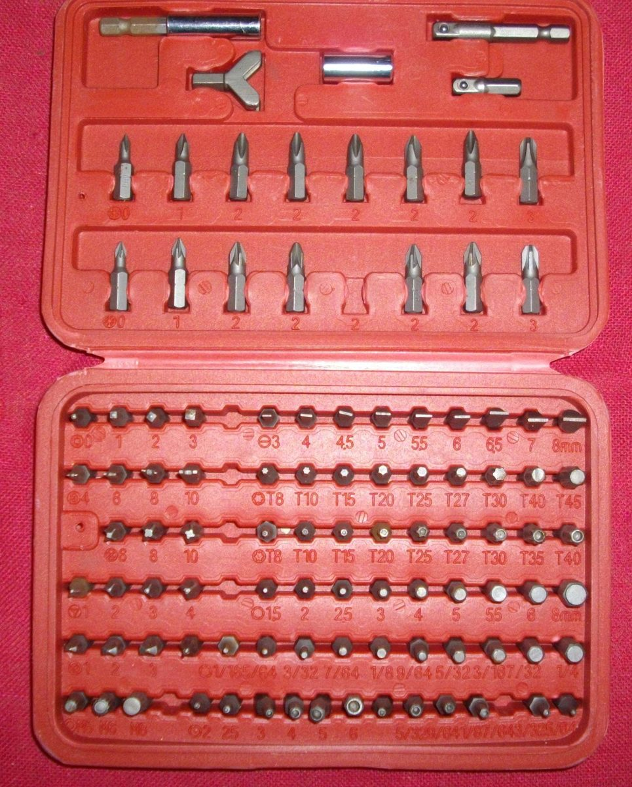
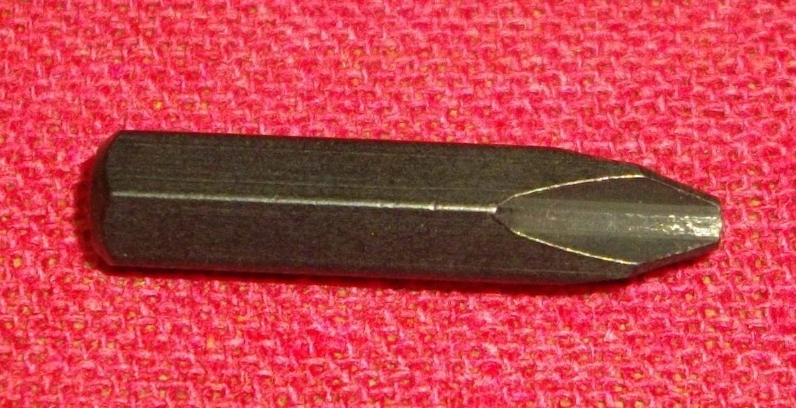
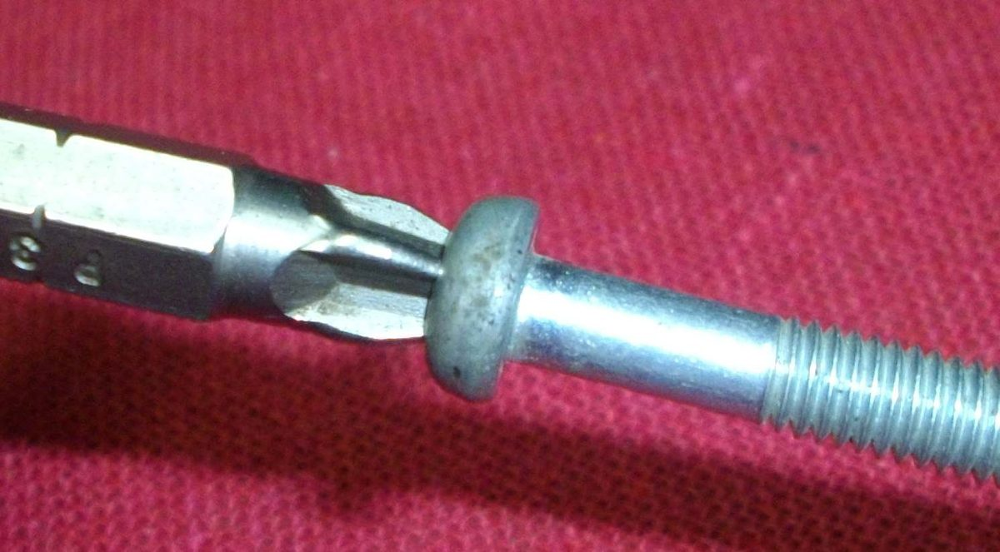
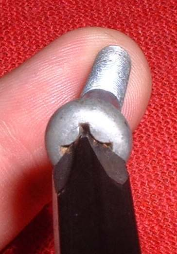
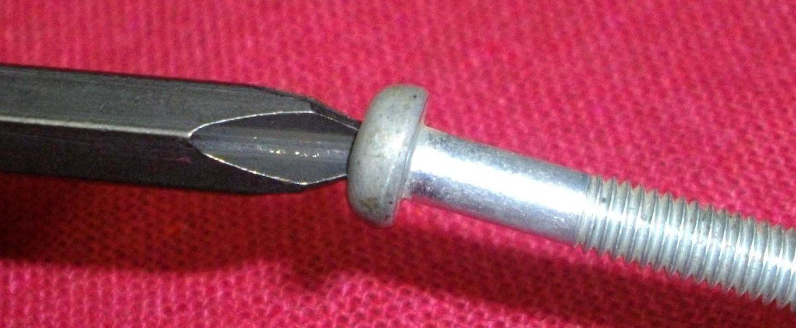

Most bike crankcase and cover screws are Phillips head, but of the JIS type. Many Phillips bits do not fit them well. A loose bit slips out (cams out) and rounds the head and the bit. That turns a two minute job into a drilling job.
You need
- A bit or screwdriver made for JIS screws. A plain "Phillips" bit may or may not fit.
- An impact driver for tight screws, held square to the screw.
Steps
- Find a screw that is in good shape and test the bit in it. It must sit tight and snug with no wobble.
- If the bit rocks or is loose, it is the wrong type. Find another bit. This is much quicker than drilling out a ruined screw head.
- JIS screws are sometimes marked with a small punch mark on the head, but many are not. Do not rely on the mark.
- ISO Phillips screws have a larger head than JIS. They are not the same, and JIS is the type used on most motorcycles.
- In your parts shop, ask for a JIS screwdriver or bit and a size. The packaging may not say JIS. A size No. 3 bit often suits larger screws and a No. 2 suits the small ones.
- Push hard into the screw as you turn. For a tight screw, strike the impact driver with a hammer while you turn.
- Do not press the bit on a damaged head. Move to Screw or bolt will not come out.
Check your work
- The screw turns out without damage to its head.
- Keep the bit that fits as your JIS bit and mark it.
If it did not fix the problem
- Rounded head: add a little valve grinding paste into the recess to help the bit bite, or use Free a stuck fastener.
- Impact driver tips: Use an impact driver.